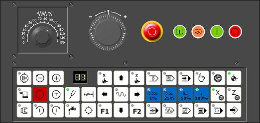
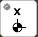
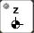
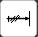
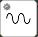
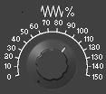

沈阳第一机床FANUC 0i Mate
返回<<<

液压启动 手动主轴降速 手动主轴升速
数码显示

X轴参考点指示 X轴负方向移动

Z轴参考点指示 编辑方式 手动数据输入方式
存储程序自动方式
手动进给 手摇脉冲
返回参考点方式 液压台尾进退 手动主轴停止
手动主轴点动
手动润滑开闭

超程释放
Z轴负方向移动

手动快速
Z轴正方向移动
液压卡盘卡紧松开
手动主轴正转
手动主轴反转
冷却液 手动选刀
X轴正方向移动
机床锁住 空运行 程序段跳步
单程序段
进给保持 程序保护
手摇脉冲0.001(快速倍率1%) 手摇脉冲0.01(快速倍率25%)
手摇脉冲0.1(快速倍率50%) 手摇脉冲1(快速倍率100%)
X轴手摇脉冲进给选择 Z轴手摇脉冲进给选择
页面切换 页面切换
紧停按钮 NC启动/停止 循环启动/进给保持

进给率调整 手轮
 紧停按钮 NC启动/停止
循环启动/进给保持
紧停按钮 NC启动/停止
循环启动/进给保持